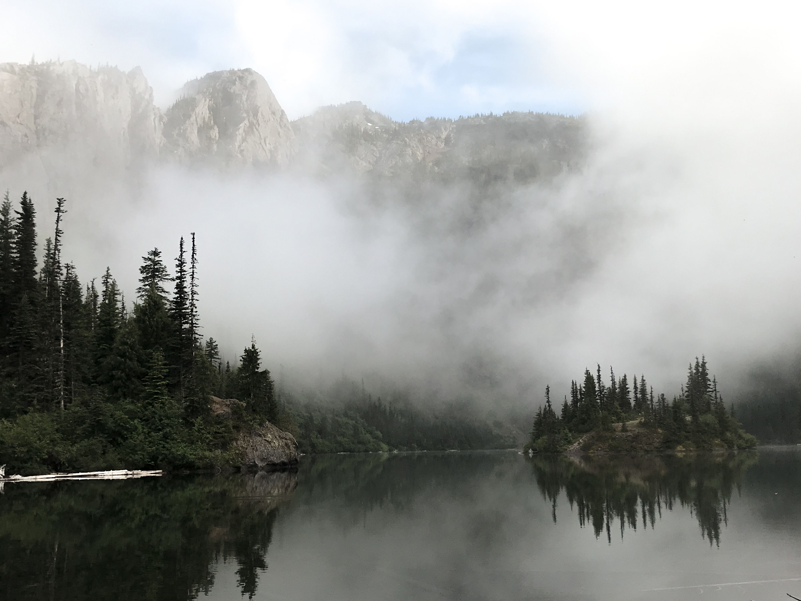
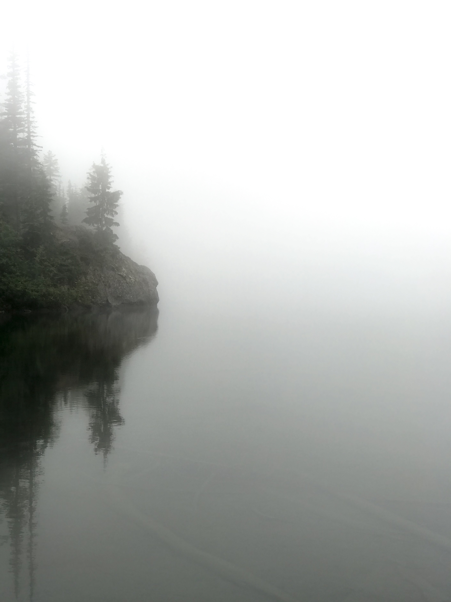
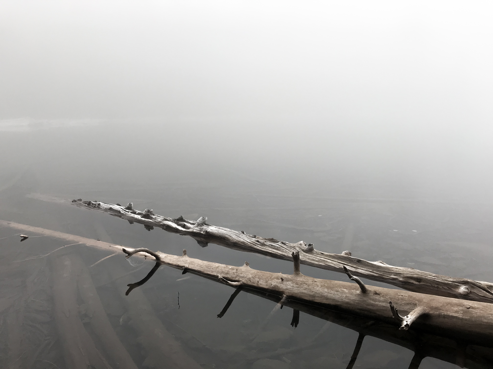

Lake Angeles via Klahhane Ridge Trail in Olympic National Park, Washington




My husband and I hiked to Lake Angeles via Klahhane Ridge Trail and arrived just in time for the fog to settle in, shrouding the tiny island nested in Lake Angeles in a very mystical cloak. I like to think of the jagged tree reflections against the stark white fog as nature's spectrum.